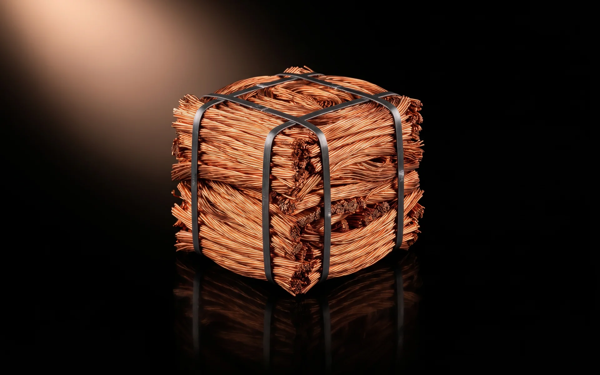

Copper & cable
The most valuable thing on the floor
Copper is the highest-value metal that comes through the facility and the easiest to ruin. The Metal Recycling Company sorts it by grade, granulates cable mechanically (never burnt) and supplies clean copper by weight, with the record to go with it.
Cable
Granulated, not burnt
Insulated cable arrives from electricians, telcos, demolition and manufacturing. We granulate it mechanically: the cable is chopped, the copper separated from the insulation by density, and the copper accumulated as clean granules. No burning, which is illegal, dangerous and destroys the value of the copper.
- Insulated cable of any gauge, including mixed and cut lengths
- Copper separated from the insulation on site; both weighed
- Recovery reported per load: around 45% copper by weight for typical building cable, measured when weighed out
- Insulation reported as residual, not hidden
Grades
What we take, and what it becomes
Common trade descriptions. A sample settles the grade, not the label.
| Stream in | Typical source | Turned into |
|---|---|---|
| Bare bright copper | Stripped wire, busbar, clean tube | Sorted bare bright, accumulated to lots |
| Copper tube and pipe | Plumbing strip-outs, HVAC, demolition | Sorted clean or with fittings removed |
| Insulated cable | Electrical, telecommunications, fit-outs | Copper granules and separated insulation |
| Motors, windings and transformers | Appliances, industrial equipment, e-waste | Copper recovered on dismantling; steel to the ferrous line |
| Mixed copper and brass | Fittings, valves, hardware | Hand sorted into copper and brass lots (see brass) |
The Metal Recycling Company does not currently provide chemical analysis. Buyers assess a supplied sample against their own specification.

Supply
Lots, by weight, with the record
Copper is accumulated until a commercial lot is ready, then offered to Australian non-ferrous buyers or containerised with our other metals for export. Every lot carries the load statements behind it: where the copper came from, how it was processed, what it weighed.
If you buy a particular grade regularly, we can set a stream aside and let you know when the next lot is ready rather than offering it to the open market.
Have copper or cable?
Electricians, telcos, demolition, manufacturers
A consistent copper or cable stream in commercial quantities is worth talking about. You get the weight in, the copper out, where it went and the carbon it saved, in your own portal.
Buying or supplying copper?
Grade, rough tonnage, how often, where. We will come back with what is available or what we can take.